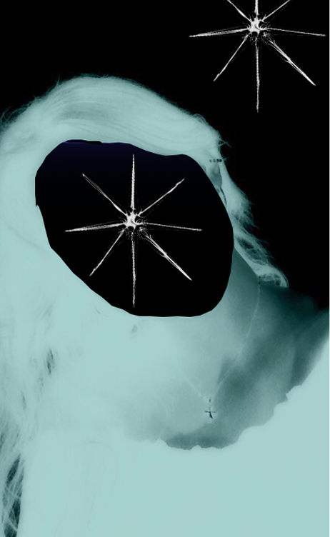

I'm on the run.
My hands are shaking. I don't know how much time I have. But I want to record what happened so you all know the truth. To know what happens if I end up in a cell or worse.
The server room is in a former cathedral, a true ministry of data. Racks upon racks of petrol crystals pulse their teal hue on the walls. Security lines the halls, both in the cameras and in the guards. At the altar is a single console, a single chair, the chair Corina used.
I felt her there, I felt a woman who risked her "perfect" life for everyone else. She walked into that room and spread the gospel until they crucified her.
Now it was my turn.
Viktor walked towards the door to the broadcasting room, and I stood a ways back. He stood in front of the biometric reader. He was calm, not even the slightest notion of stress. I prayed the entire time his stress levels would be under 10%, that's all I could hope for.
The encryption began to work, and the doors opened. I began to walk towards them, but then, it was him.
He was taller than on the broadcast. His body wasn't made of flesh and bones, but rather porcelain smooth surfaces and joints that moved with impossible precision. Only his heart, which was covered in layers of glass, was still his, the only human thing left ironically. His face is permanently stuck at age 50.
It was The First Director.
He didn't say anything at first. No threats, no yelling. He was honestly expressionless. His head tilted, and he said, "You served me well, whether you wanted to or not."
He knew. He knew we were coming. He knew Corina would come. The miners were killed because they threatened the regime, they were killed because they didn't matter in the long run. They were a message not to be inspired by a dead woman's words.
"You're not the first to come here. And it's likely you won't be the last."
He didn't seem worried about us at all. It made me so mad.
"Do you really think information does anything? Does a society in the light improve, or does the information simply overpower the mind? If not me, then who? Information is a commodity, and its shelf life is for you, unfortunately, short."
He looked toward the broadcasting screen.
"In five years, the people of Zimnygrad will have new issues, new problems with their lives. They couldn't care less about your broadcast, and in 20 years, they will deny that any of it was ever true. It's a cycle, it happens across decades, across centuries, and this will be no different. The truth is tiring."
His eyes had a tired expression to them.
"I'm not a monster, Irina. You might think I am, but the Freeze was necessary. It was for the community, it was, it is, for the people. The old world was dying, and all I did was speed up the process so something new could grow out of it. You may not like it, but it cannot be undone."
——
He offered us a choice.
Viktor could return to his normal life. His position, security apartment, and life would all be preserved. We would say that we had a falling out, and I would return to my work in Sector 2. We would never see each other again, but we would survive. Our minds were too powerful for The Director to lose us now.
Or
We could upload our broadcast, show the entire nation the truth on camera. And we could learn how he became this way.
The Director was not threatening, he was more curious than anything.
Viktor looked at me, and I looked at the key.
My hand moved.
I pressed it.
The broadcast began.
———
Everything that happened next was a blur. Viktor grabbed my hand, and we ran out. I took one last look at the Director, who simply stood there watching the broadcast. I remember alarms going off, I remember lights flashing. And I remember being incredibly out of breath.
Viktor pulled me through various corridors that I had never seen before and then through a tunnel that had never been documented on any map. He always had a plan. He could tell that I was utterly surprised.
"I've been mapping escape routes for months, just in case."
As we made it through the transit tunnels, we could hear and see the broadcast in the sky through the windows. Videos of the files of Project Eternal Winter, Corina's speech, and the fifty miners. Everyone in the nation was watching.
Finally, the truth is out.
For now, Viktor and I are alive. I don't know what will become of us, but I do know that the truth was alive. Even if it was just for a short time, no one could look away.
Now it is our turn again, sisters, to see what can come from this.


at times like this I miss my mother but she has no face
The First Director
20 - 06 - 11 P.F
02938475902